The problem
Milanosport manages 24 public sports facilities across Milan, but using them was unnecessarily hard. Booking a single session took 16 clicks across multiple disconnected pages. Finding accessibility information required 10 steps. The information architecture was inconsistent, the visual design was dated, and key accessibility standards were unmet — all for a platform serving a diverse, city-wide public.
The brief was clear: make it usable, make it accessible, make it feel like a modern public service.
The idea
We set three goals to anchor every decision:
- Reorganise content and simplify navigation.
- Design a clear end-to-end booking flow.
- Improve accessibility and visual coherence with a proper design system.
My role
Tools
- Figma
Research
Before redesigning anything, we needed an evidence-based picture of what was broken and why. We layered four diagnostic methods on top of each other so every redesign decision could be traced back to a specific finding.
Heuristic evaluation. We mapped Milanosport against Nielsen's heuristics. Of the ten we tested, four came back as critical severity — affecting the platform's most-used flows.
Critical
User control & freedom
No profile or settings page. Users couldn't filter content or adjust their bookings once started.
Critical
Consistency & standards
No design language. Menus changed between pages, the logo moved around, content didn't match.
Critical
Error prevention
No warnings, no way to modify bookings, no way to log out. The system never protected users from mistakes.
Critical
Aesthetic & minimalist design
Inconsistent visual style, unnecessary elements, illegible text, irrelevant content layered across pages.
High
Visibility of system status
No profile section, feedback messages were unclear — users had no sense of where they were or what was happening.
High
Recognition rather than recall
UI and navigation were not standardised, forcing users to remember rather than recognise patterns.
High
Flexibility & efficiency of use
Too many steps in the navigation, no personalisation, no shortcuts for repeat users.
Medium
Match between system & real world
Icons and section names were unintuitive; the information architecture used unfamiliar categorisation.
Low
Help users recover from errors
When warnings did exist, they appeared in the wrong place — making recovery harder than it needed to be.
Low
Help & documentation
Contact section buried, no FAQ — users had nowhere to turn when stuck.
Competitor analysis. We benchmarked Milanosport against four direct and indirect competitors — including Spor İstanbul (best-in-class for public sports infrastructure), GetFit, Aquaniene, and platforms like Airbnb and Trainline for their complex booking flows. The benchmarking made one thing clear: Milanosport was lagging on consistency, error-proofing, minimalism, and ease of navigation — exactly where the best competitors excel.
We then rated each competitor across seven UX quality dimensions — information architecture, consistency, minimalism, navigation, error-proofing, readability, and responsiveness. The result told the whole story in one glance: Milanosport sits at the centre — the smallest shape on the chart.
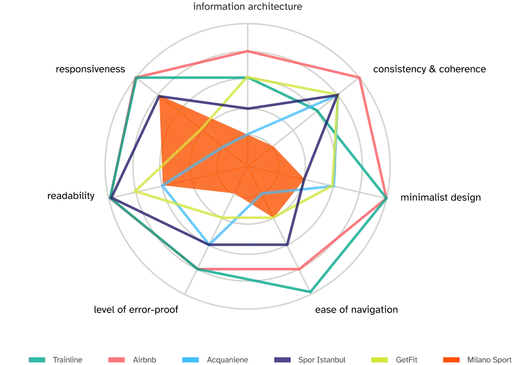
Mapping the same brands across usability and unique features made the strategic question explicit: where should Milanosport move? The redesign aimed to push it up and to the right — closer to the platforms that get both right.
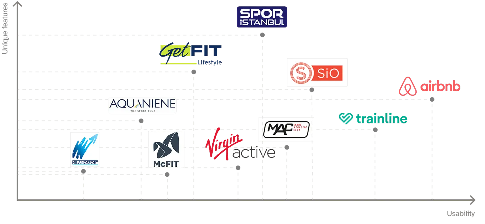
User personas. We built five personas representing the platform's actual users — from international students to wheelchair users, retired seniors, and parents — to make sure the redesign worked for everyone, not just the easy cases.

Bob
International student, just moved to Milan.

Carla
Wheelchair user, basketball supporter.

Lorenzo
Retired senior managing health.

Fabio
Colourblind gym manager.

Chiara
Writer and mother of two.
Cognitive walkthrough. We traced four key user tasks step by step, counting the clicks and pages required on the current platform. The results gave us a sharp, numerical picture of how broken the flows actually were.
Redesign
With the diagnosis in hand, we restructured the information architecture from scratch — flattening duplicate paths, surfacing the booking flow at the top level, and adding two new sections (a personal Profile and a Routes page). Then we wireframed and built out the full set of redesigned pages.
Home page. Simplified the overall look and content, organised by hierarchy, and added an interactive map highlighting all 24 centres.
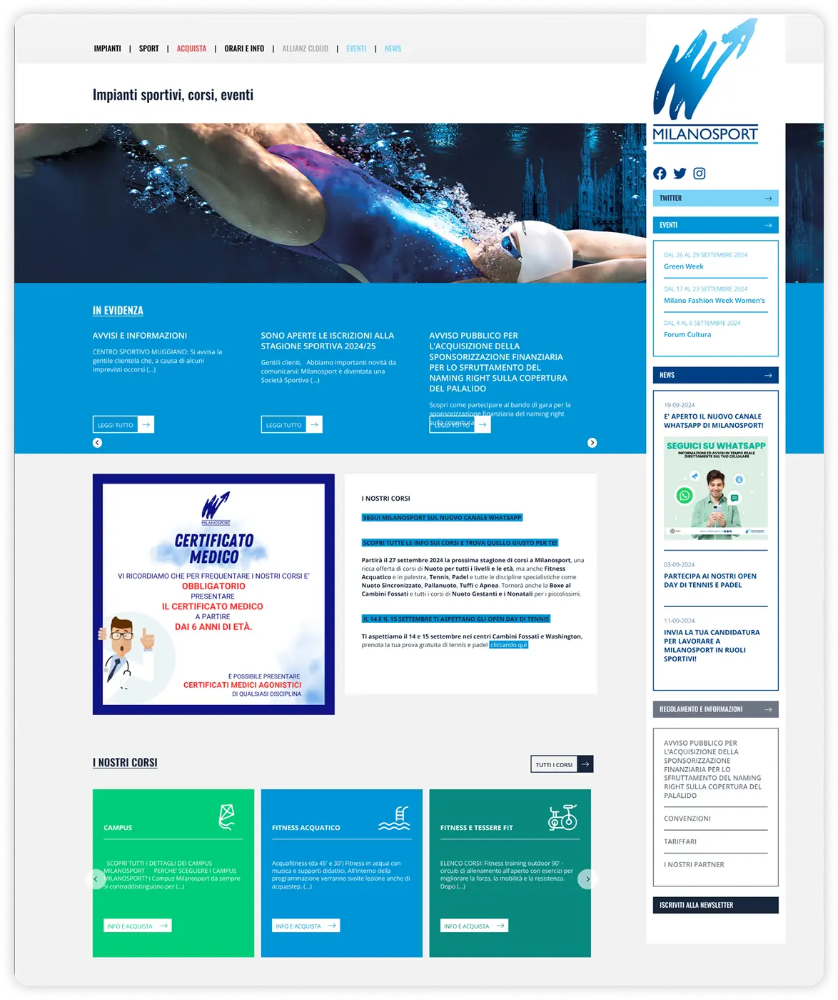
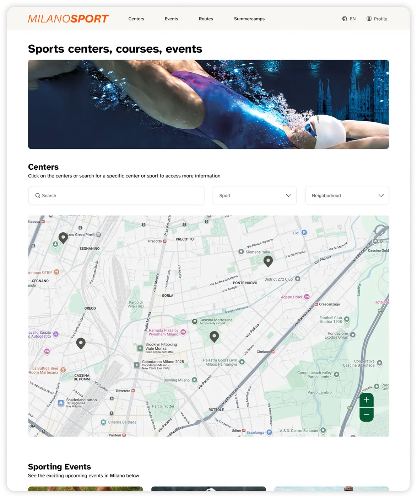
Specific centre page. Highlighted the booking CTA, carried important information to the top, and embedded the booking flow in the same page.
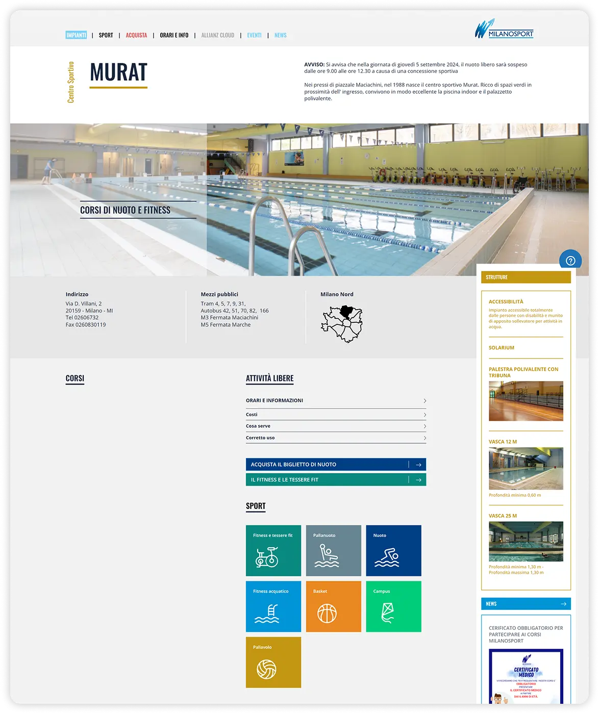
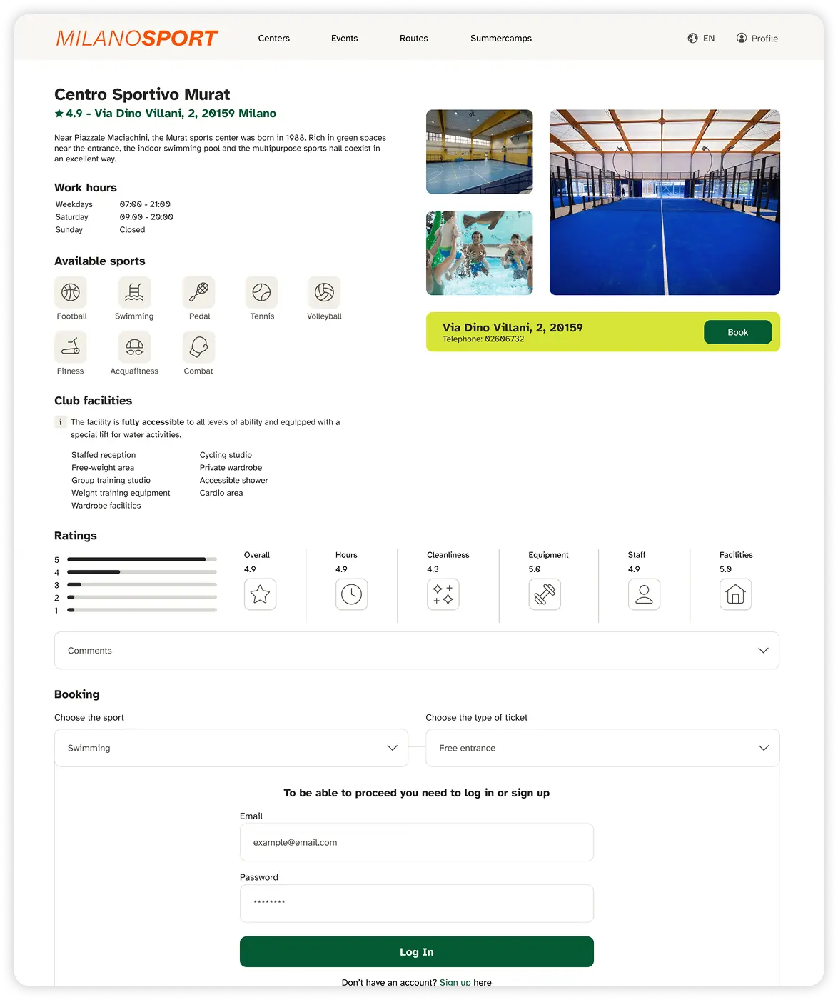
Summercamps page. Renamed and restructured for clarity, with a clear hierarchy that finally made the available options obvious.
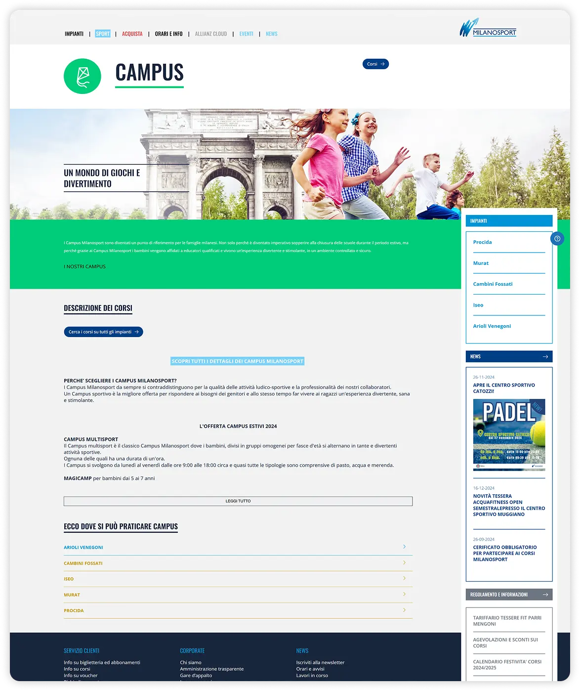
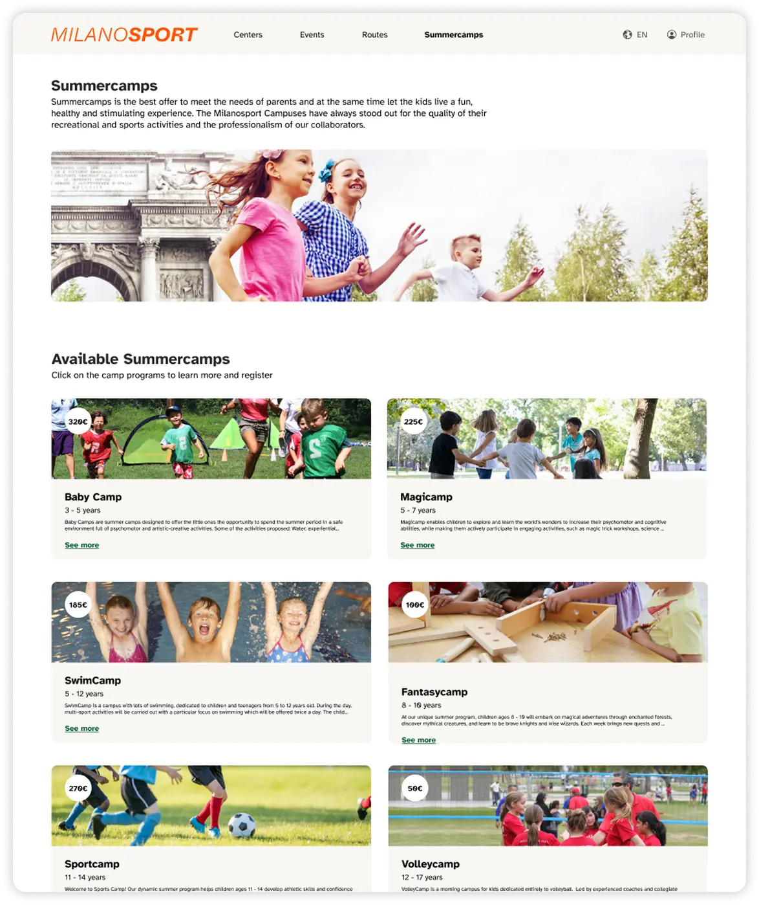
We also added two new features: a personal profile to manage bookings and leave reviews, and a Routes page suggesting sport routes around Milan, catered to each user's preferences.
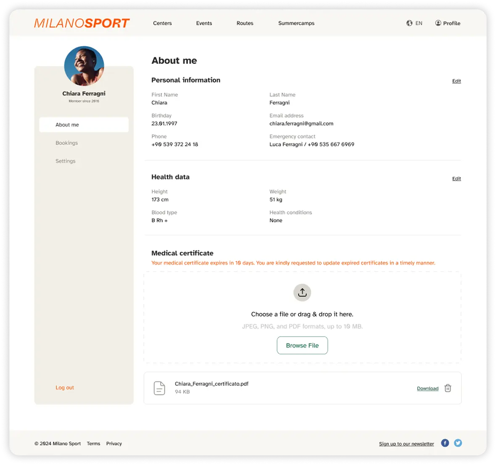
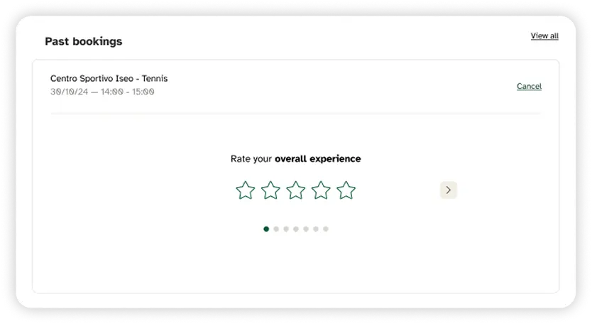
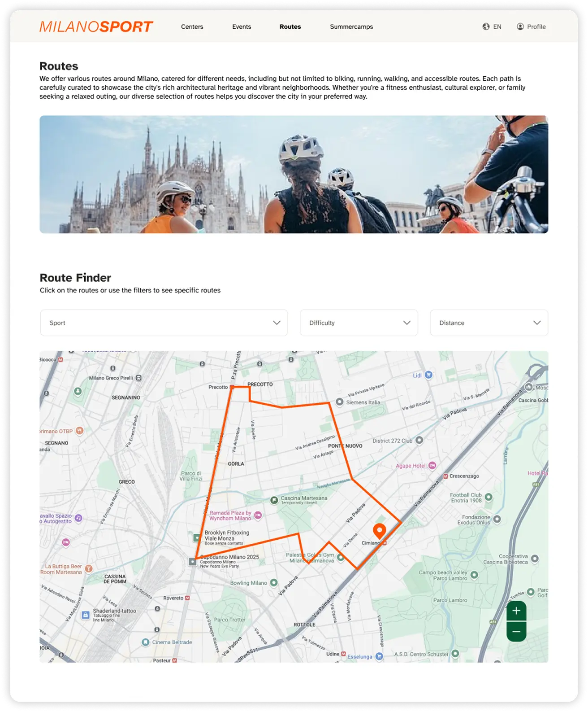
Accessibility check. We tested the prototype against three types of colour blindness using the Stark app, to make sure the redesign worked for everyone — not just users with full-colour vision.
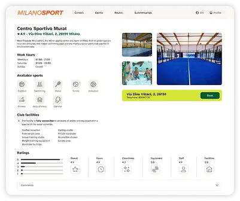
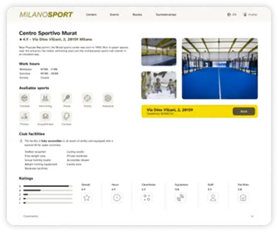
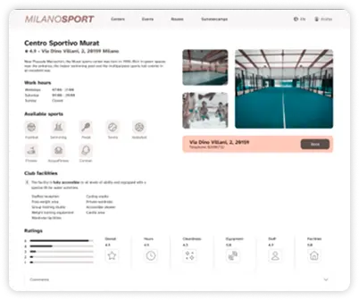
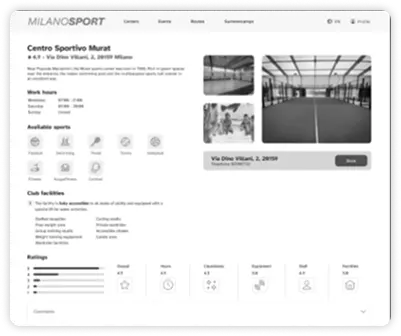
The results. For every task we measured, we significantly reduced clicks and pages visited. Booking a sports session dropped from 16 clicks to 9 — a 44% reduction in friction for the platform's most-used flow.
Reflection
Milanosport taught us the value of rigorous diagnosis before jumping to solutions. The heuristic evaluation and cognitive walkthroughs weren't just academic exercises — they gave us a shared, evidence-based language to talk about what was broken and why. When you can show that booking a sports session takes 16 steps and should take 9, the case for redesign practically makes itself.
The competitor analysis was a turning point. Mapping how platforms like Airbnb and Trainline handle complex booking flows — and understanding exactly why they feel effortless — sharpened our eye for the difference between a UI that looks clean and one that actually thinks about the user's mental load. That distinction now shapes how I approach every UX project.